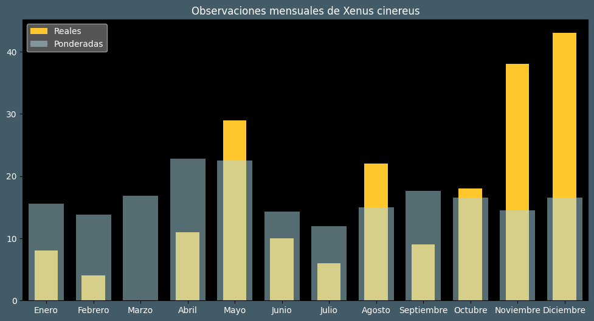

Observaciones por mes
Observations por hora

Categoría IUCN: ?
Género: Xenus
Familia: Scolopacidae
Orden: Charadriiformes
Descubrimiento: Güldenstädt (1775)
| Idioma | Nombre |
|---|---|
| Afrikaans (af) | Terekruiter |
| Arabic (ar) | دريجة رملية |
| Belarusian (be) | Кулiк-марадунка |
| Bulgarian (bg) | Пепеляв брегобегач |
| Catalan (ca) | Siseta cendrosa |
| Chinese (zh) | 翘嘴鹬 |
| Chinese traditional (zh-TW) | 反嘴鷸〔翹嘴鷸〕 |
| Croatian (hr) | Prutka sabljarka |
| Czech (cs) | Vodouš malý |
| Danish (da) | Terekklire |
| Dutch (nl) | Terekruiter |
| English (en) | Terek sandpiper |
| Estonian (et) | Hallkibu e. kibutilder |
| Finnish (fi) | Rantakurvi |
| French (fr) | Chevalier bargette |
| German (de) | Terekwasserläufer |
| Greek (el) | Ρωσότρυγγας |
| Hebrew (he) | ביצנית אפורה |
| Hungarian (hu) | Terekcankó |
| Icelandic (is) | Bjúgstelkur |
| Indonesian (id) | Trinil bedaran |
| Italian (it) | Piro piro del terek |
| Japanese (ja) | ソリハシシギ |
| Korean (ko) | 뒷부리도요 |
| Latvian (lv) | Terekija |
| Lithuanian (lt) | Terekija |
| Maceodnian (mk) | ? |
| Malayalam (ml) | ടെറക് മണലൂതി |
| North_sami (se) | Gáddeskirvi |
| Norwegian (no) | Tereksnipe |
| Persian (fa) | آبچلیک نوک سربالا |
| Polish (pl) | Terekia |
| Portuguese (pt) | Maçarico-sovela |
| Russian (ru) | Мородунка |
| Serbian (sr) | Dugokljuni sprudnik |
| Slovak (sk) | Brodník sivý |
| Spanish (es) | Andarríos del terek |
| Swedish (sv) | Tereksnäppa |
| Thai (th) | นกชายเลนปากแอ่น |
| Turkish (tr) | Terek düdükçünü |
| Ukrainian (uk) | Мородунка |